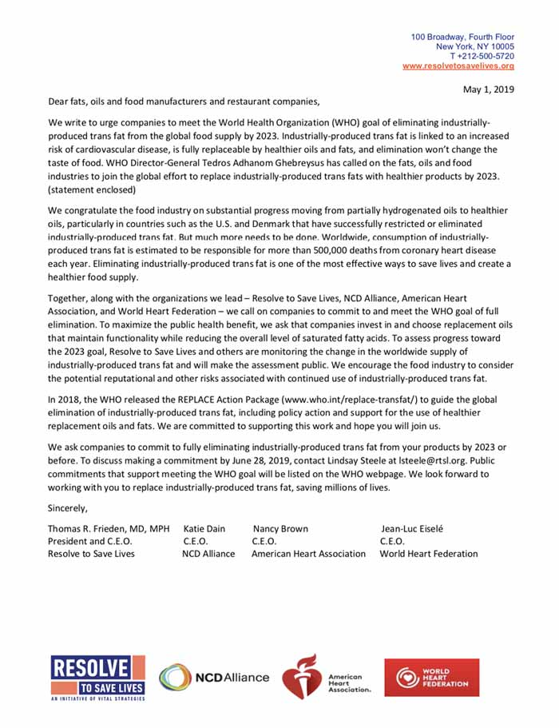
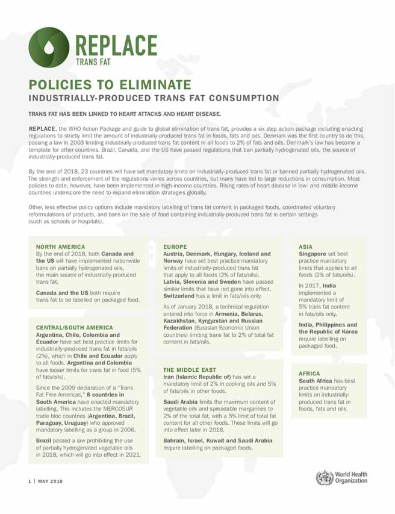
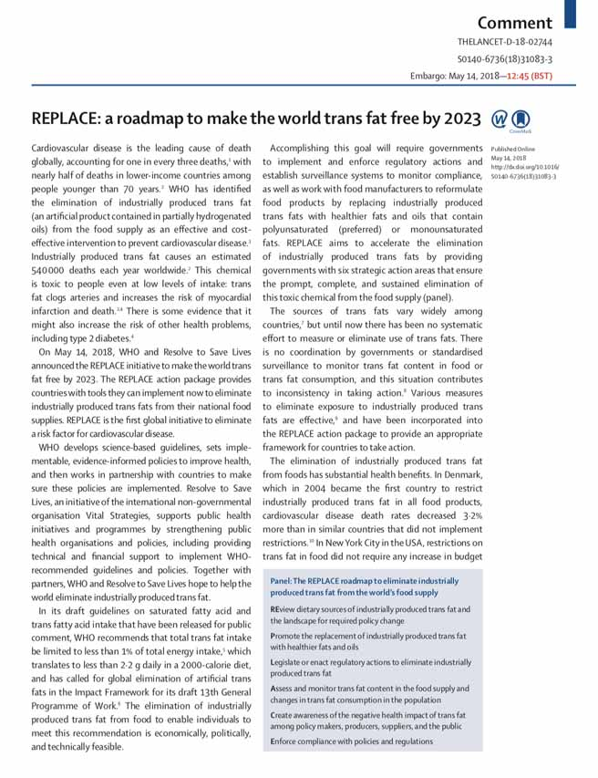
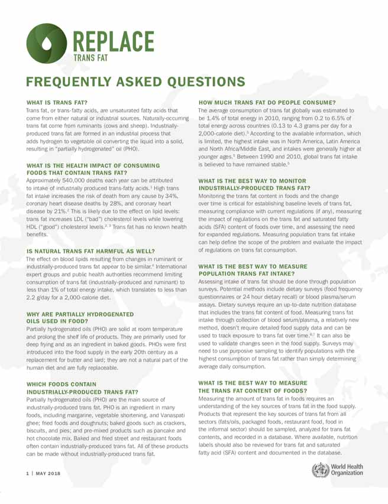
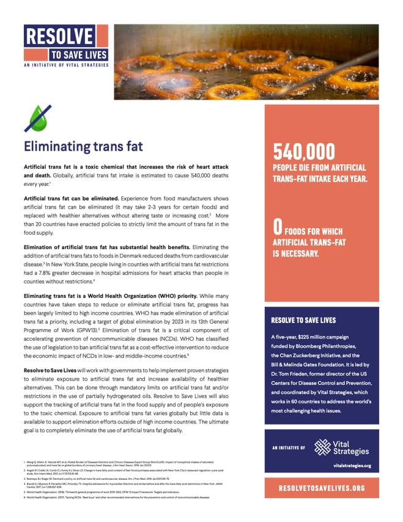
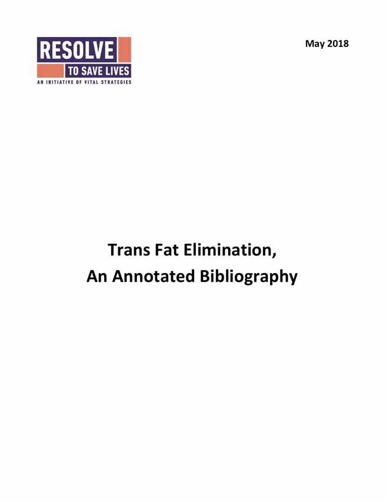

Artificial trans fat can be eliminated from the world by 2023
Artificial trans fat is a harmful compound that increases the risk of heart attack and death. It can be eliminated and replaced with healthier alternatives without altering taste or increasing cost.
Artificial trans fat is estimated to cause 540,000 deaths every year, globally. Elimination of artificial trans fat has substantial health benefits. Eliminating the use of artificial trans fat in foods in Denmark reduced deaths from cardiovascular disease. In New York State, people living in counties with artificial trans fat restrictions were 6% less likely to be admitted to the hospital after suffering a heart attack or stroke.

Progress by region

NORTH AMERICA
In 2018, Canada and the US implemented nationwide bans on partially hydrogenated oils, the main source of industrially-produced trans fat. Canada and the US both require trans fat to be labeled on packaged food.

AFRICA
South Africa has best practice mandatory limits on industrially-produced trans fat in foods, fats and oils.

ASIA
In 2017, India implemented a mandatory limit of 5% trans fat content in fats/oils only. Singapore has a mandatory limit of 2% trans fat content in fats/oils only. India, Singapore, Philippines, and the Republic of Korea require labeling of trans fat on packaged food. Thailand placed a ban on partially hydrogenated oils.

THE MIDDLE EAST
Iran (Islamic Republic of) has set a mandatory limit of 2% in cooking oils and 5% of fats/oils in other foods. Saudi Arabia limits the maximum content of vegetable oils and spreadable margarines to 2% of the total fat, with a 5% limit of total fat content for all other foods. Bahrain, Israel, Jordan, Kuwait, Oman, Qatar, Saudi Arabia, and UAE require labeling of trans fat on packaged foods.

CENTRAL/SOUTH AMERICA
Argentina, Chile, Colombia, Ecuador, Peru, and Uruguay have set limits for industrially-produced trans fat in fats/oils (2%), which in Chile applies to all foods and the others have 5% limits applying to other foods. Since the 2009 declaration of a “Trans Fat Free Americas,” 8 countries in have enacted mandatory labeling.

EUROPE
Denmark, Iceland, and Norway have set best practice mandatory limits of industrially-produced trans fat that apply to all foods (2% of fats/oils). Austria set a limit on trans fats of 2g per 100g of a food item. Latvia, Slovenia, and Sweden have passed similar limits. Switzerland and Hungary have a 2% limit in fats/oils only. In 2018, a technical regulation entered into force in Armenia, Belarus, Kazakhstan, Kyrgyzstan, and Russian Federation limiting trans fat to 2% of total fat content in fats/oils.
What we're doing
We support the World Health Organization's REPLACE technical package, the world's first action package that provides a step-by-step guide for the elimination of industrially-produced trans fat from the global food supply.
Resolve to Save Lives works with local, national, and global governments to help scale up proven strategies to reduce and eliminate exposure to artificial trans fats and increase the availability of healthier alternatives. This can be done through mandatory labeling limits and restrictions.
We are funding efforts to assess levels of artificial trans fat in the food supply as well as people's exposure. Our ultimate goal is to completely eliminate the use of artificial trans fats throughout the world.
Argentina's success
Argentina’s journey from using industrially-produced trans fats to improving heart health began in 1990. Researchers turned their attention to the country’s high rate of heart disease, seeking causes and solutions.
As global awareness grew on trans fats’ role in cardiovascular diseases, health officials knew they had to take a stand. Partnerships formed between the agricultural and health ministries, the business and consumer sectors, and academia.The Government’s final decision to adopt a mandatory approach helped the country virtually rid its food of industrially-produced trans fats by 2014.
Cardiovascular diseases are Argentina’s main cause of death, and trans fat elimination is seen as having the biggest potential impact on the general population.
“Eliminating trans fat is a priority for the entire region,” says Dr. Fabio Gomes, Regional Nutrition Advisor at the Pan American Health Organization (PAHO), the Regional Office of the Americas for WHO. “Reducing trans fat consumption by just 2% to 4% of total calories could prevent an estimated 30 000 to 225 000 heart attacks in Latin America and the Caribbean.”
The work has paid off. A 2015 study published in the WHO Bulletin estimated that anywhere from 301 to 1517 cardiac deaths per year were averted by eliminating industrially-produced trans fats in Argentina1. The study also found that replacing industrially-produced trans fat will save between US$17 million and $87 million in healthcare costs annually.
Several factors were in Argentina’s favor, including the availability of plant-based alternative fats enabled by increased production of sunflower oil high in oleic acid.
In 1990, La Plata National University, the Buenos Aires Scientific Investigations Commission, and the Buenos Aires Health Ministry began studying the high incidence of coronary death. Companies began investigating and using industrial trans fat alternatives, including interesterified vegetable oils (saturated and unsaturated vegetable oils blended to increase the melting point); semisolid fats comprised of milk-fat fractions and sunflower oil; and stearins of different melting points derived from modified sunflower oil.
While trans fat labeling became mandatory in 2006, limiting them in food was voluntary until 2008, with some companies already substituting other fats.
In 2008, the PAHO-backed Trans Fat Free Americas Declaration called for limiting industrially-produced trans fat to less than 2% of total fat in oils and margarines, and less than 5% of total fat in other foods. The declaration recommended mandatory labeling of trans fat content in foods, standardized across the Americas, and when possible, replacement with unsaturated fats.
The Argentine Commission for the Elimination of Trans Fats was formed soon after. The Ministry of Health brought together consumer groups, academia and the food industry, as well as:
- the National Institute of Nutrition (part of the health ministry),
- the National Institute of Industrial Technology (part of the Ministry of Economics),
- the Ministry of Agribusiness, and
- the Argentinian Association of Fats and Oils.
Three inter-agency subgroups were created, leading to changes in 2010 in the Argentinian food code, el Código Alimentario Argentino (CAA), and a new guide for small and medium businesses on how to replace industrially-produced trans fats. The CAA amendments established deadlines for industry to comply with the limits: two years to meet the 2% limit of industrially-produced trans fats in margarines and vegetable oils, and approximately five years for the 5% limit in other products. By 2014 the code was almost fully implemented.
The efforts met little resistance because the changes were easy and inexpensive. By 2014, most companies were complying. A study found 73% of the food products screened were in compliance by 2014, with overall compliance rising to 93% by 2015.
Dr. Fabio Gomes describes Argentina’s approach to eliminating trans fat as "innovative and pioneering". He notes the Government managed to “take the lead in enacting a mandatory approach towards the virtual elimination of trans fats from the food system." “This model is inspiring other countries," he adds.
Resources
 Joint letter to companies to eliminate artificial trans fat REPLACE Technical Package  REPLACE: Policies to Eliminate Industrially-produced Trans Fat Consumption  REPLACE: a roadmap to make the world trans fat free by 2023 (The Lancet)  REPLACE: Frequently Asked Questions  Eliminating Trans Fat One-Page Factsheet  Eliminating Trans Fat Annotated BibliographyReferences
- Rubinstein, Adolfo, et al. "Eliminating artificial trans fatty acids in Argentina: estimated effects on the burden of coronary heart disease and costs." Bulletin of the World Health Organization 93 (2015): 614-622.